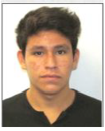

|  | JOSÉ DAVID SANTANDER MARTÍNEZ |
Emilio Laurent #196 Col. La Conchita Zapotitlán, Del. Tláhuac C.P. 13360 CDMX, México • Cel.: 55 60 66 39 35
• R.F.C.: SAMD951207• Email: santander.david.19@gmail.com
Professional in Organization of Computational Systems and Software Engineering with knowledge in technological areas such as: intelligent systems, graphic computing systems, database systems, communication systems, among others.
Entrepreneurial attitude of leadership and innovation. With well-established values of professional ethics and social sensitivity.
Computer Engineering, August 2014 – Present
NATIONAL AUTONOMUS UNIVERSITY OF MEXICO (UNAM), MEXICO CITY, MEXICO
Computer Technician, June 2014
PROFESSIONAL COMPUTER CENTER OF MEXICO, MEXICO CITY, MEXICO
High School, March 2014
NATIONAL PREPARATORY SCHOOL (UNAM), MEXICO CITY, MEXICO
NATIONAL AUTONOMUS UNIVERSITY OF MEXICO (UNAM), Mexico City, Mexico
August 2016 – Present
Software Engineering Project Leader
Responsible for the development of software project for the General Hospital of Milpa Alta
Graphic Computing Project Leader
Responsible in the development of video games with 3D graphics.
Compiler Designer
Responsible for the analysis and development of a compiler for a microprocessor with MIPS architecture.
Digital Systems Designer
Responsible for the development of a digital safe.
Biomedical Systems Designer (Present)
Responsible for the development of a simulator for the acquisition and training of skills and surgical dexterity in minimally invasive surgery.
Languages:
English: Native level Fluency
Spanish: Proficient Level
Diplomas and Certificates: Certificate in Digital Grafic Design; Certificate in Computer Systems.
Awards and Honours: Third Place in the Health Education modality of the Morphology, Physiology and Health College. Third Place in the Robotics contest of the UNAM Engineering School.
Technical Skills:
| CSS | ⭐⭐⭐⭐ | HTML | ⭐⭐⭐⭐⭐ | C++ | ⭐⭐⭐ |
| OpenCV | ⭐⭐⭐⭐ | Java | ⭐⭐⭐⭐ | C | ⭐⭐⭐⭐⭐ |
| Python | ⭐⭐⭐⭐⭐ | SQL | ⭐⭐⭐⭐ | Adobe Design Suite | ⭐⭐⭐ |
| Linux | ⭐⭐⭐ | Visual | ⭐⭐⭐ | Prolog | ⭐⭐⭐ |
| Access | ⭐⭐⭐ | MIcrosoft Office | ⭐⭐⭐⭐⭐ | Autocad | ⭐⭐ |
| Corel | ⭐⭐ | Draw3DMax | ⭐⭐ | OpenGL | ⭐⭐⭐⭐ |
| JavaScript | ⭐⭐⭐ |
Partnerships: INROADS de México A.C. (Present).